Introduction and Background
In today’s rapidly evolving health and wellness market, data-driven insights are essential for companies seeking to harness their potential and engage consumers effectively. As a junior data analyst on the marketing analyst team at Bellabeat, I have the unique opportunity to contribute to a forward-thinking company specializing in high-tech health-focused products for women. Founded by Urška Sršen, who serves as the cofounder and Chief Creative Officer, Bellabeat is a dynamic small business poised to expand its footprint in the competitive global smart device market.
The alignment of Bellabeat’s innovative products with the rising consumer demand for fitness and health monitoring technology presents a significant opportunity for growth. Sršen firmly believes that the strategic analysis of fitness data derived from smart devices can unlock previously untapped avenues for market expansion and customer engagement. Consequently, I have been tasked with delving into the usage patterns and behaviors of consumers through data analytics, focusing on one of Bellabeat’s flagship products.
This analysis aims to provide insights that will not only enhance our understanding of user interactions with the device but also inform and guide marketing strategies for Bellabeat moving forward. By presenting these findings and high-level recommendations to the Bellabeat executive team, we hope to pave the way for a more targeted and effective approach to reaching our audience and leveraging our unique position in the health tech landscape. Through this initiative, we will explore the intricacies of consumer behavior and unlock the full potential of data to drive Bellabeat’s growth in the wellness ecosystem.
Products from the company
Ask Phase
Objective:
Analyze data on consumer usage of non-Bellabeat smart devices to uncover trends that could offer valuable insights into how Bellabeat customers use smart devices. Using these insights, select a Bellabeat product and propose ways these trends can influence Bellabeat’s marketing strategy.
Stakeholders:
Prepare Phase
Dataset and Data Organization:
The FitBit Fitness Tracker Data (CC0: Public Domain, available through Mobius) is a publicly accessible dataset on Kaggle, featuring personal fitness data from thirty Fitbit users. The data includes minute-by-minute records of physical activity, heart rate, and sleep monitoring, collected from users who agreed to share their personal tracker data. This dataset provides insights into daily activity, steps, and heart rate, making it a valuable resource for exploring user habits.
The data was gathered from participants in a survey conducted via Amazon Mechanical Turk between December 3, 2016, and December 5, 2016. Thirty eligible Fitbit users consented to contribute their data, which includes detailed records for physical activity, heart rate, and sleep. Individual data can be accessed by session ID (column A) or timestamp (column B). Variations in the data reflect the different types of Fitbit trackers used, as well as the personal tracking preferences and behaviors of the participants.
Eighteen CSV documents are available for analysis, each representing different quantitative data tracked by Fitbit. Due to the nature of the data, which is considered long, each row corresponds to one time point per subject. Consequently, each subject will have data in multiple rows.Each user has a unique ID, and the data is tracked by day and time, resulting in different rows for each user.
Data credibility and integrity:
Data credibility and integrity constitute significant concerns in the context of this study. The dataset, which is limited to 30 users, exhibits notable deficiencies in terms of demographic details and representativeness, as evidenced by its small size. Furthermore, the dataset’s limited collection period, spanning merely two months, is likely to introduce sampling bias issues into the data. To address these limitations and ensure the validity of the results, the present case study employs an approach that prioritizes practical applications of the data. This methodological decision is informed by a recognition of the dataset’s inherent limitations in terms of its scope and relevance.
Process Phase
I selected R, a powerful, open-source programming language specifically designed for statistical computing and graphics, as my analysis tool of choice. R is equipped with an extensive array of advanced statistical methods, a robust ecosystem of packages for various analysis requirements, and exceptional data visualization capabilities. Its robust capabilities make it ideal for complex statistical analysis as well as research-oriented data projects.
activity <- read.csv("~/google analytics/CAPSTONE/archive (1)/mturkfitbit_export_4.12.16-5.12.16/Fitabase Data 4.12.16-5.12.16/dailyActivity_merged.csv")
sleep <- read.csv("~/google analytics/CAPSTONE/archive (1)/mturkfitbit_export_4.12.16-5.12.16/Fitabase Data 4.12.16-5.12.16/sleepDay_merged.csv")
calories <- read.csv("~/google analytics/CAPSTONE/archive (1)/mturkfitbit_export_4.12.16-5.12.16/Fitabase Data 4.12.16-5.12.16/dailyCalories_merged.csv")
steps <- read.csv("~/google analytics/CAPSTONE/archive (1)/mturkfitbit_export_4.12.16-5.12.16/Fitabase Data 4.12.16-5.12.16/dailySteps_merged.csv")
intensities <- read.csv("~/google analytics/CAPSTONE/archive (1)/mturkfitbit_export_4.12.16-5.12.16/Fitabase Data 4.12.16-5.12.16/dailyIntensities_merged.csv")
weight <- read.csv("~/google analytics/CAPSTONE/archive (1)/mturkfitbit_export_4.12.16-5.12.16/Fitabase Data 4.12.16-5.12.16/weightLogInfo_merged.csv")
# Heart rates in seconds
hr1 <- read.csv("~/google analytics/CAPSTONE/archive (1)/mturkfitbit_export_3.12.16-4.11.16/Fitabase Data 3.12.16-4.11.16/heartrate_seconds_merged.csv")
hr2 <- read.csv("~/google analytics/CAPSTONE/archive (1)/mturkfitbit_export_4.12.16-5.12.16/Fitabase Data 4.12.16-5.12.16/heartrate_seconds_merged.csv")Explore the data
- Daily Activity dataset
Head
## Id ActivityDate TotalSteps TotalDistance TrackerDistance
## 1 1503960366 4/12/2016 13162 8.50 8.50
## 2 1503960366 4/13/2016 10735 6.97 6.97
## 3 1503960366 4/14/2016 10460 6.74 6.74
## 4 1503960366 4/15/2016 9762 6.28 6.28
## 5 1503960366 4/16/2016 12669 8.16 8.16
## 6 1503960366 4/17/2016 9705 6.48 6.48
## LoggedActivitiesDistance VeryActiveDistance ModeratelyActiveDistance
## 1 0 1.88 0.55
## 2 0 1.57 0.69
## 3 0 2.44 0.40
## 4 0 2.14 1.26
## 5 0 2.71 0.41
## 6 0 3.19 0.78
## LightActiveDistance SedentaryActiveDistance VeryActiveMinutes
## 1 6.06 0 25
## 2 4.71 0 21
## 3 3.91 0 30
## 4 2.83 0 29
## 5 5.04 0 36
## 6 2.51 0 38
## FairlyActiveMinutes LightlyActiveMinutes SedentaryMinutes Calories
## 1 13 328 728 1985
## 2 19 217 776 1797
## 3 11 181 1218 1776
## 4 34 209 726 1745
## 5 10 221 773 1863
## 6 20 164 539 1728Glimpse of Activity
## Rows: 940
## Columns: 15
## $ Id <dbl> 1503960366, 1503960366, 1503960366, 150396036…
## $ ActivityDate <chr> "4/12/2016", "4/13/2016", "4/14/2016", "4/15/…
## $ TotalSteps <int> 13162, 10735, 10460, 9762, 12669, 9705, 13019…
## $ TotalDistance <dbl> 8.50, 6.97, 6.74, 6.28, 8.16, 6.48, 8.59, 9.8…
## $ TrackerDistance <dbl> 8.50, 6.97, 6.74, 6.28, 8.16, 6.48, 8.59, 9.8…
## $ LoggedActivitiesDistance <dbl> 0, 0, 0, 0, 0, 0, 0, 0, 0, 0, 0, 0, 0, 0, 0, …
## $ VeryActiveDistance <dbl> 1.88, 1.57, 2.44, 2.14, 2.71, 3.19, 3.25, 3.5…
## $ ModeratelyActiveDistance <dbl> 0.55, 0.69, 0.40, 1.26, 0.41, 0.78, 0.64, 1.3…
## $ LightActiveDistance <dbl> 6.06, 4.71, 3.91, 2.83, 5.04, 2.51, 4.71, 5.0…
## $ SedentaryActiveDistance <dbl> 0, 0, 0, 0, 0, 0, 0, 0, 0, 0, 0, 0, 0, 0, 0, …
## $ VeryActiveMinutes <int> 25, 21, 30, 29, 36, 38, 42, 50, 28, 19, 66, 4…
## $ FairlyActiveMinutes <int> 13, 19, 11, 34, 10, 20, 16, 31, 12, 8, 27, 21…
## $ LightlyActiveMinutes <int> 328, 217, 181, 209, 221, 164, 233, 264, 205, …
## $ SedentaryMinutes <int> 728, 776, 1218, 726, 773, 539, 1149, 775, 818…
## $ Calories <int> 1985, 1797, 1776, 1745, 1863, 1728, 1921, 203…Checking missing data
## [1] 0
- Sleep dataset
Head
## Id SleepDay TotalSleepRecords TotalMinutesAsleep TotalTimeInBed
## 1 1503960366 4/12/2016 1 327 346
## 2 1503960366 4/13/2016 2 384 407
## 3 1503960366 4/15/2016 1 412 442
## 4 1503960366 4/16/2016 2 340 367
## 5 1503960366 4/17/2016 1 700 712
## 6 1503960366 4/19/2016 1 304 320
## ActivityDay
## 1 4/12/2016
## 2 4/13/2016
## 3 4/15/2016
## 4 4/16/2016
## 5 4/17/2016
## 6 4/19/2016Glimpse of Sleep
glimpse(sleep)Checking missing data
## [1] 0
- Calories dataset
Head
## Id ActivityDay Calories
## 1 1503960366 4/12/2016 1985
## 2 1503960366 4/13/2016 1797
## 3 1503960366 4/14/2016 1776
## 4 1503960366 4/15/2016 1745
## 5 1503960366 4/16/2016 1863
## 6 1503960366 4/17/2016 1728Glimpse of Calories
## Rows: 940
## Columns: 3
## $ Id <dbl> 1503960366, 1503960366, 1503960366, 1503960366, 1503960366…
## $ ActivityDay <chr> "4/12/2016", "4/13/2016", "4/14/2016", "4/15/2016", "4/16/…
## $ Calories <int> 1985, 1797, 1776, 1745, 1863, 1728, 1921, 2035, 1786, 1775…Checking missing data
## [1] 0
- Steps dataset
Head
## Id ActivityDay StepTotal
## 1 1503960366 4/12/2016 13162
## 2 1503960366 4/13/2016 10735
## 3 1503960366 4/14/2016 10460
## 4 1503960366 4/15/2016 9762
## 5 1503960366 4/16/2016 12669
## 6 1503960366 4/17/2016 9705Glimpse of Steps
## Rows: 940
## Columns: 3
## $ Id <dbl> 1503960366, 1503960366, 1503960366, 1503960366, 1503960366…
## $ ActivityDay <chr> "4/12/2016", "4/13/2016", "4/14/2016", "4/15/2016", "4/16/…
## $ StepTotal <int> 13162, 10735, 10460, 9762, 12669, 9705, 13019, 15506, 1054…Checking missing data
## [1] 0
- Intensity dataset
Head
## Id ActivityDay SedentaryMinutes LightlyActiveMinutes
## 1 1503960366 4/12/2016 728 328
## 2 1503960366 4/13/2016 776 217
## 3 1503960366 4/14/2016 1218 181
## 4 1503960366 4/15/2016 726 209
## 5 1503960366 4/16/2016 773 221
## 6 1503960366 4/17/2016 539 164
## FairlyActiveMinutes VeryActiveMinutes SedentaryActiveDistance
## 1 13 25 0
## 2 19 21 0
## 3 11 30 0
## 4 34 29 0
## 5 10 36 0
## 6 20 38 0
## LightActiveDistance ModeratelyActiveDistance VeryActiveDistance
## 1 6.06 0.55 1.88
## 2 4.71 0.69 1.57
## 3 3.91 0.40 2.44
## 4 2.83 1.26 2.14
## 5 5.04 0.41 2.71
## 6 2.51 0.78 3.19Glimpse of Intensities
## Rows: 940
## Columns: 10
## $ Id <dbl> 1503960366, 1503960366, 1503960366, 150396036…
## $ ActivityDay <chr> "4/12/2016", "4/13/2016", "4/14/2016", "4/15/…
## $ SedentaryMinutes <int> 728, 776, 1218, 726, 773, 539, 1149, 775, 818…
## $ LightlyActiveMinutes <int> 328, 217, 181, 209, 221, 164, 233, 264, 205, …
## $ FairlyActiveMinutes <int> 13, 19, 11, 34, 10, 20, 16, 31, 12, 8, 27, 21…
## $ VeryActiveMinutes <int> 25, 21, 30, 29, 36, 38, 42, 50, 28, 19, 66, 4…
## $ SedentaryActiveDistance <dbl> 0, 0, 0, 0, 0, 0, 0, 0, 0, 0, 0, 0, 0, 0, 0, …
## $ LightActiveDistance <dbl> 6.06, 4.71, 3.91, 2.83, 5.04, 2.51, 4.71, 5.0…
## $ ModeratelyActiveDistance <dbl> 0.55, 0.69, 0.40, 1.26, 0.41, 0.78, 0.64, 1.3…
## $ VeryActiveDistance <dbl> 1.88, 1.57, 2.44, 2.14, 2.71, 3.19, 3.25, 3.5…Checking missing data
## [1] 0
- Weight dataset
Head
## Id Date WeightKg WeightPounds Fat BMI
## 1 1503960366 5/2/2016 11:59:59 PM 52.6 115.9631 22 22.65
## 2 1503960366 5/3/2016 11:59:59 PM 52.6 115.9631 NA 22.65
## 3 1927972279 4/13/2016 1:08:52 AM 133.5 294.3171 NA 47.54
## 4 2873212765 4/21/2016 11:59:59 PM 56.7 125.0021 NA 21.45
## 5 2873212765 5/12/2016 11:59:59 PM 57.3 126.3249 NA 21.69
## 6 4319703577 4/17/2016 11:59:59 PM 72.4 159.6147 25 27.45
## IsManualReport LogId
## 1 True 1.462234e+12
## 2 True 1.462320e+12
## 3 False 1.460510e+12
## 4 True 1.461283e+12
## 5 True 1.463098e+12
## 6 True 1.460938e+12Glimpse of Weight
## Rows: 67
## Columns: 8
## $ Id <dbl> 1503960366, 1503960366, 1927972279, 2873212765, 2873212…
## $ Date <chr> "5/2/2016 11:59:59 PM", "5/3/2016 11:59:59 PM", "4/13/2…
## $ WeightKg <dbl> 52.6, 52.6, 133.5, 56.7, 57.3, 72.4, 72.3, 69.7, 70.3, …
## $ WeightPounds <dbl> 115.9631, 115.9631, 294.3171, 125.0021, 126.3249, 159.6…
## $ Fat <int> 22, NA, NA, NA, NA, 25, NA, NA, NA, NA, NA, NA, NA, NA,…
## $ BMI <dbl> 22.65, 22.65, 47.54, 21.45, 21.69, 27.45, 27.38, 27.25,…
## $ IsManualReport <chr> "True", "True", "False", "True", "True", "True", "True"…
## $ LogId <dbl> 1.462234e+12, 1.462320e+12, 1.460510e+12, 1.461283e+12,…Checking missing data
## [1] 65
- Heart Rate 1 (March) dataset
Head
## Id Time Value
## 1 2022484408 4/1/2016 7:54:00 AM 93
## 2 2022484408 4/1/2016 7:54:05 AM 91
## 3 2022484408 4/1/2016 7:54:10 AM 96
## 4 2022484408 4/1/2016 7:54:15 AM 98
## 5 2022484408 4/1/2016 7:54:20 AM 100
## 6 2022484408 4/1/2016 7:54:25 AM 101Glimpse of Heart Rate 1
## Rows: 1,154,681
## Columns: 3
## $ Id <dbl> 2022484408, 2022484408, 2022484408, 2022484408, 2022484408, 2022…
## $ Time <chr> "4/1/2016 7:54:00 AM", "4/1/2016 7:54:05 AM", "4/1/2016 7:54:10 …
## $ Value <int> 93, 91, 96, 98, 100, 101, 104, 105, 102, 106, 109, 112, 111, 109…Checking missing data
## [1] 0
- Heart Rate 2 (April) dataset
Head
## Id Time Value
## 1 2022484408 4/12/2016 7:21:00 AM 97
## 2 2022484408 4/12/2016 7:21:05 AM 102
## 3 2022484408 4/12/2016 7:21:10 AM 105
## 4 2022484408 4/12/2016 7:21:20 AM 103
## 5 2022484408 4/12/2016 7:21:25 AM 101
## 6 2022484408 4/12/2016 7:22:05 AM 95Glimpse of Heart Rate 2
## Rows: 2,483,658
## Columns: 3
## $ Id <dbl> 2022484408, 2022484408, 2022484408, 2022484408, 2022484408, 2022…
## $ Time <chr> "4/12/2016 7:21:00 AM", "4/12/2016 7:21:05 AM", "4/12/2016 7:21:…
## $ Value <int> 97, 102, 105, 103, 101, 95, 91, 93, 94, 93, 92, 89, 83, 61, 60, …Checking missing data
## [1] 0## [1] 33## [1] 24## [1] 33## [1] 33## [1] 33## [1] 8## [1] 14## [1] 14Four of the datasets contain information from 33 subjects. Sleep data was recorded by 24 subjects, heart rate data by 14, and weight data by only 8 participants.
## [1] 0## [1] 0## [1] 0## [1] 3## [1] 0## [1] 0## [1] 0## [1] 0It seems that only the sleep dataset has duplicates
## [1] "Id" "ActivityDate"
## [3] "TotalSteps" "TotalDistance"
## [5] "TrackerDistance" "LoggedActivitiesDistance"
## [7] "VeryActiveDistance" "ModeratelyActiveDistance"
## [9] "LightActiveDistance" "SedentaryActiveDistance"
## [11] "VeryActiveMinutes" "FairlyActiveMinutes"
## [13] "LightlyActiveMinutes" "SedentaryMinutes"
## [15] "Calories"## [1] "Id" "SleepDay" "TotalSleepRecords"
## [4] "TotalMinutesAsleep" "TotalTimeInBed" "ActivityDay"## [1] "Id" "ActivityDay" "Calories"## [1] "Id" "ActivityDay" "StepTotal"## [1] "Id" "ActivityDay"
## [3] "SedentaryMinutes" "LightlyActiveMinutes"
## [5] "FairlyActiveMinutes" "VeryActiveMinutes"
## [7] "SedentaryActiveDistance" "LightActiveDistance"
## [9] "ModeratelyActiveDistance" "VeryActiveDistance"## [1] "Id" "Date" "WeightKg" "WeightPounds"
## [5] "Fat" "BMI" "IsManualReport" "LogId"## [1] "Id" "Time" "Value"## [1] "Id" "Time" "Value"While the 3 out of 4 datasets has a column called ‘ActivityDay’, the activity dataset column is called ‘ActivityDate’. Since the dates match, we will rename the column in the process phase.
Summary statistics
- Daily Activity data
## TotalSteps TotalDistance SedentaryMinutes Calories
## Min. : 0 Min. : 0.000 Min. : 0.0 Min. : 0
## 1st Qu.: 3790 1st Qu.: 2.620 1st Qu.: 729.8 1st Qu.:1828
## Median : 7406 Median : 5.245 Median :1057.5 Median :2134
## Mean : 7638 Mean : 5.490 Mean : 991.2 Mean :2304
## 3rd Qu.:10727 3rd Qu.: 7.713 3rd Qu.:1229.5 3rd Qu.:2793
## Max. :36019 Max. :28.030 Max. :1440.0 Max. :4900On average, this group of participants walks 7,638 steps per day. They spend approximately 991 minutes in a sedentary state.
- Sleep data
## TotalSleepRecords TotalMinutesAsleep TotalTimeInBed
## Min. :1.000 Min. : 58.0 Min. : 61.0
## 1st Qu.:1.000 1st Qu.:361.0 1st Qu.:403.0
## Median :1.000 Median :433.0 Median :463.0
## Mean :1.119 Mean :419.5 Mean :458.6
## 3rd Qu.:1.000 3rd Qu.:490.0 3rd Qu.:526.0
## Max. :3.000 Max. :796.0 Max. :961.0On average, the study participants required 39 minutes to fall asleep and reported sleeping for approximately seven hours.
- Calories data
## Id ActivityDay Calories
## Min. :1.504e+09 Length:940 Min. : 0
## 1st Qu.:2.320e+09 Class :character 1st Qu.:1828
## Median :4.445e+09 Mode :character Median :2134
## Mean :4.855e+09 Mean :2304
## 3rd Qu.:6.962e+09 3rd Qu.:2793
## Max. :8.878e+09 Max. :4900The average daily caloric expenditure of these participants is 2,304 calories.
- Steps data
## StepTotal
## Min. : 0
## 1st Qu.: 3790
## Median : 7406
## Mean : 7638
## 3rd Qu.:10727
## Max. :36019The mean total steps for this group is 7,406 steps.
- Intensities data
intensities %>% select(SedentaryMinutes,LightlyActiveMinutes,FairlyActiveMinutes,VeryActiveMinutes,VeryActiveDistance) %>%
summary()## SedentaryMinutes LightlyActiveMinutes FairlyActiveMinutes VeryActiveMinutes
## Min. : 0.0 Min. : 0.0 Min. : 0.00 Min. : 0.00
## 1st Qu.: 729.8 1st Qu.:127.0 1st Qu.: 0.00 1st Qu.: 0.00
## Median :1057.5 Median :199.0 Median : 6.00 Median : 4.00
## Mean : 991.2 Mean :192.8 Mean : 13.56 Mean : 21.16
## 3rd Qu.:1229.5 3rd Qu.:264.0 3rd Qu.: 19.00 3rd Qu.: 32.00
## Max. :1440.0 Max. :518.0 Max. :143.00 Max. :210.00
## VeryActiveDistance
## Min. : 0.000
## 1st Qu.: 0.000
## Median : 0.210
## Mean : 1.503
## 3rd Qu.: 2.053
## Max. :21.920This group exhibited a tendency to engage in sedentary behavior for a greater duration than the total amount of active time they accumulated each day, with an average of 1.5 miles of very active distance traversed.
- Weight data
## WeightPounds Fat BMI
## Min. :116.0 Min. :22.00 Min. :21.45
## 1st Qu.:135.4 1st Qu.:22.75 1st Qu.:23.96
## Median :137.8 Median :23.50 Median :24.39
## Mean :158.8 Mean :23.50 Mean :25.19
## 3rd Qu.:187.5 3rd Qu.:24.25 3rd Qu.:25.56
## Max. :294.3 Max. :25.00 Max. :47.54
## NA's :65The mean weight and BMI of these subjects are 158 lbs and 25.2, respectively.The Fat variable contains a preponderance of NAs, rendering its information unusable.
- Heart Rate data
## Value
## Min. : 36.00
## 1st Qu.: 66.00
## Median : 77.00
## Mean : 79.76
## 3rd Qu.: 90.00
## Max. :185.00## Value
## Min. : 36.00
## 1st Qu.: 63.00
## Median : 73.00
## Mean : 77.33
## 3rd Qu.: 88.00
## Max. :203.00While the average was approximately 78, the data for both months demonstrate significant variations in heart rate.
Rename intensities dataset column
Identifying duplicates in sleep dataset
## Id SleepDay TotalSleepRecords TotalMinutesAsleep TotalTimeInBed
## 162 4388161847 5/5/2016 1 471 495
## 224 4702921684 5/7/2016 1 520 543
## 381 8378563200 4/25/2016 1 388 402
## ActivityDay
## 162 5/5/2016
## 224 5/7/2016
## 381 4/25/2016Deleting duplicates in sleep dataset
Checking if steps dataset contains the same information than activity dataset
##
## TRUE
## 940##
## TRUE
## 940The data in steps is already within the activity dataset. We dont need it.
Checking if calories dataset contains the same information than activity dataset
##
## TRUE
## 940##
## TRUE
## 940The data in calories is already within the activity dataset. We dont need it.
Merging datasets together
## Joining with `by = join_by(Id, ActivityDate,
## VeryActiveDistance, ModeratelyActiveDistance,
## LightActiveDistance, SedentaryActiveDistance,
## VeryActiveMinutes, FairlyActiveMinutes, LightlyActiveMinutes,
## SedentaryMinutes)`Checking classes
## 'data.frame': 940 obs. of 15 variables:
## $ Id : num 1.5e+09 1.5e+09 1.5e+09 1.5e+09 1.5e+09 ...
## $ ActivityDate : chr "4/12/2016" "4/13/2016" "4/14/2016" "4/15/2016" ...
## $ TotalSteps : int 13162 10735 10460 9762 12669 9705 13019 15506 10544 9819 ...
## $ TotalDistance : num 8.5 6.97 6.74 6.28 8.16 ...
## $ TrackerDistance : num 8.5 6.97 6.74 6.28 8.16 ...
## $ LoggedActivitiesDistance: num 0 0 0 0 0 0 0 0 0 0 ...
## $ VeryActiveDistance : num 1.88 1.57 2.44 2.14 2.71 ...
## $ ModeratelyActiveDistance: num 0.55 0.69 0.4 1.26 0.41 ...
## $ LightActiveDistance : num 6.06 4.71 3.91 2.83 5.04 ...
## $ SedentaryActiveDistance : num 0 0 0 0 0 0 0 0 0 0 ...
## $ VeryActiveMinutes : int 25 21 30 29 36 38 42 50 28 19 ...
## $ FairlyActiveMinutes : int 13 19 11 34 10 20 16 31 12 8 ...
## $ LightlyActiveMinutes : int 328 217 181 209 221 164 233 264 205 211 ...
## $ SedentaryMinutes : int 728 776 1218 726 773 539 1149 775 818 838 ...
## $ Calories : int 1985 1797 1776 1745 1863 1728 1921 2035 1786 1775 ...Data Type Conversion
join_data$Id <- as.factor(join_data$Id)
join_data$ActivityDate <- as.Date(join_data$ActivityDate, format = '%m/%d/%Y')Data Transformation
Create a column for day of the week
Create a column for active hours
join_data <- join_data %>%
mutate(ActiveHours = round(rowSums(across(c(VeryActiveMinutes,FairlyActiveMinutes,LightlyActiveMinutes)), na.rm = TRUE)/60)) Create a column for sedentary hours
Analyze Phase
Do these participants spend more time active or sedentary?
# Create total average activity
avgActive <- mean(join_data$ActiveHours)
avgSedentary <- mean(join_data$SedentaryHours)
tot <- avgActive + avgSedentary# Create a dataframe to plot
df1 <- data_frame(avgActive, avgSedentary, tot) %>%
pivot_longer(cols = everything()) %>%
mutate(name = c("Active", "Sedentary", "Total"),
percentage = c((avgActive/tot), (avgSedentary/tot), tot/tot)) %>%
filter(!name == "Total") %>%
mutate(label = scales::percent(percentage))# Plot
ggplot(df1, aes(x = "", y = value, fill = name)) +
geom_bar(stat = "identity", width = 1) +
coord_polar("y", start = 0) + theme_void() +
ggtitle("Figure 1. Average Activity per Hour") +
theme(plot.title = element_text(hjust = 0.5, vjust = -2)) +
scale_fill_manual(name = "Activity Type",
labels = c("Active",
"Sedentary"),
values = c("skyblue", "lightgray")) +
geom_label(aes(label = label),
size = 5,
position = position_stack(vjust = .4),
show.legend = FALSE)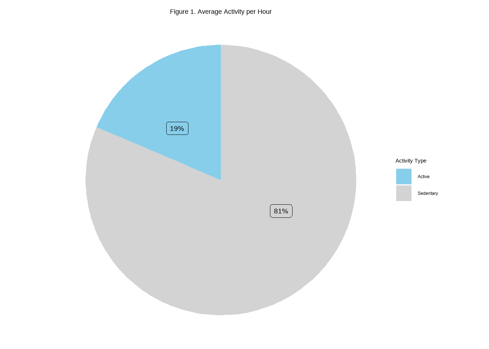
[Figure 1]
Unfortunately, this group of participants spend more than 80% of their time without activity.
Comparing the 3 types of active minutes with calories
#Create dataset for plot
data_long <- gather(join_data, variable, value, VeryActiveMinutes:LightlyActiveMinutes)
# Plot
ggplot(data = data_long) +
geom_point(mapping = aes(x = value, y = Calories, color = variable)) +
geom_smooth(mapping = aes(x = value, y = Calories), method = lm) +
facet_wrap(~ variable, scales = "free") +
xlab('Active Minutes') +
ggtitle("Comparison of Active Minutes Intensity, and Calories") +
theme(plot.title = element_text(color="black", size=14, face="bold",hjust=0.5))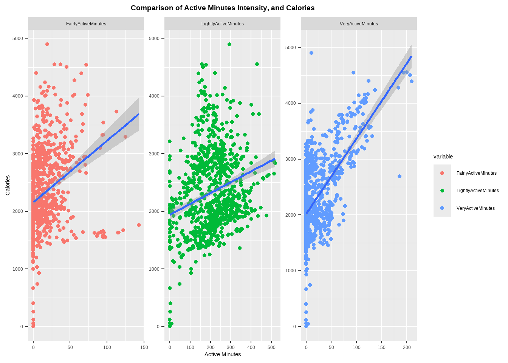 [Figure 2]
As demonstrated in the data, there is a direct correlation between increased intensity and increased caloric expenditure. However, it is noteworthy that these subjects also engaged in light activity for a greater proportion of time.
Intensity variation within days of the week
ggplot(data = data_long) +
geom_bar(mapping = aes(fill = variable, x = DayofWeek, y = value), stat = "identity", position = "dodge")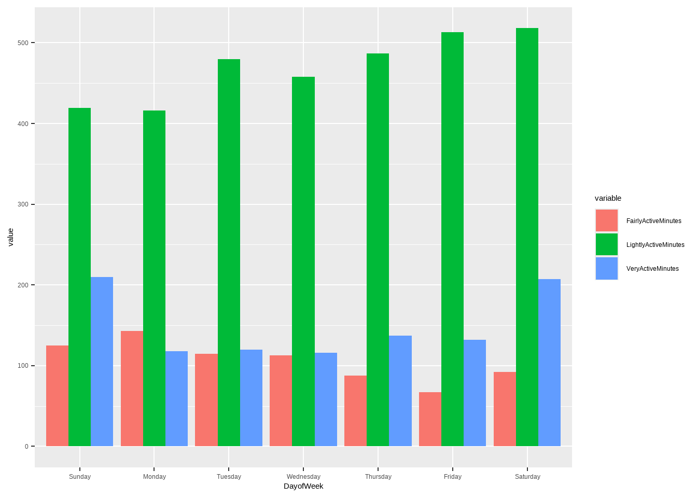
[Figure 3]
The graph clearly shows that participants generally engage in low-intensity exercise during the week and higher intensity exercise on the weekends.
Comparing active minutes with total steps
ggplot(data = data_long) +
geom_point(mapping = aes(x = value, y = TotalSteps, color = variable)) +
geom_smooth(mapping = aes(x = value, y = TotalSteps), method = lm) +
facet_wrap(~ variable, scales = "free") +
xlab('Active Minutes') +
ylab('Total Steps') +
ggtitle("Comparison of Active Minutes Intensity, and Total Steps") +
theme(plot.title = element_text(color="black", size=14, face="bold",hjust=0.5))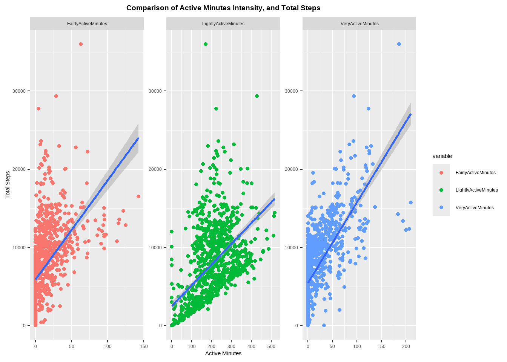
[Figure 4]
Conversely, as the intensity of the exercise increases, the number of steps taken also rises.
Relationship between steps and inactivity
ggplot(data=activity, aes(x=TotalSteps, y=SedentaryMinutes)) +
geom_point() +
geom_smooth(mapping = aes(x=TotalSteps, y=SedentaryMinutes), method = lm, se = FALSE) +
xlab('Total Steps')+
ylab('Sedentary Minutes')+
ggtitle('Total Steps and Sedentary Minutes Relationship') +
theme(plot.title = element_text(color="black", size=14, face="bold",hjust=0.5))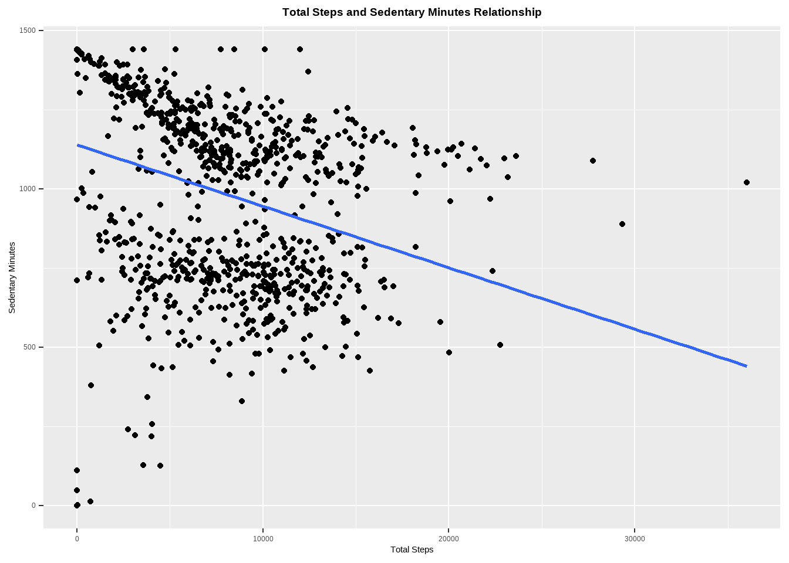
[Figure 5]
A negative correlation exists between the number of steps taken per day and sedentary minutes.
Minutes Asleep and Time in Bed Relationship
ggplot(data=new_sleep, aes(x=TotalMinutesAsleep, y=TotalTimeInBed)) +
geom_point() +
geom_smooth(mapping = aes(x=TotalMinutesAsleep, y=TotalTimeInBed), method = lm, se = FALSE) +
xlab('Total Minutes Asleep')+
ylab('Total Time in Bed')+
ggtitle('Minutes Asleep and Time in Bed Relationship') +
theme(plot.title = element_text(color="black", size=14, face="bold",hjust=0.5))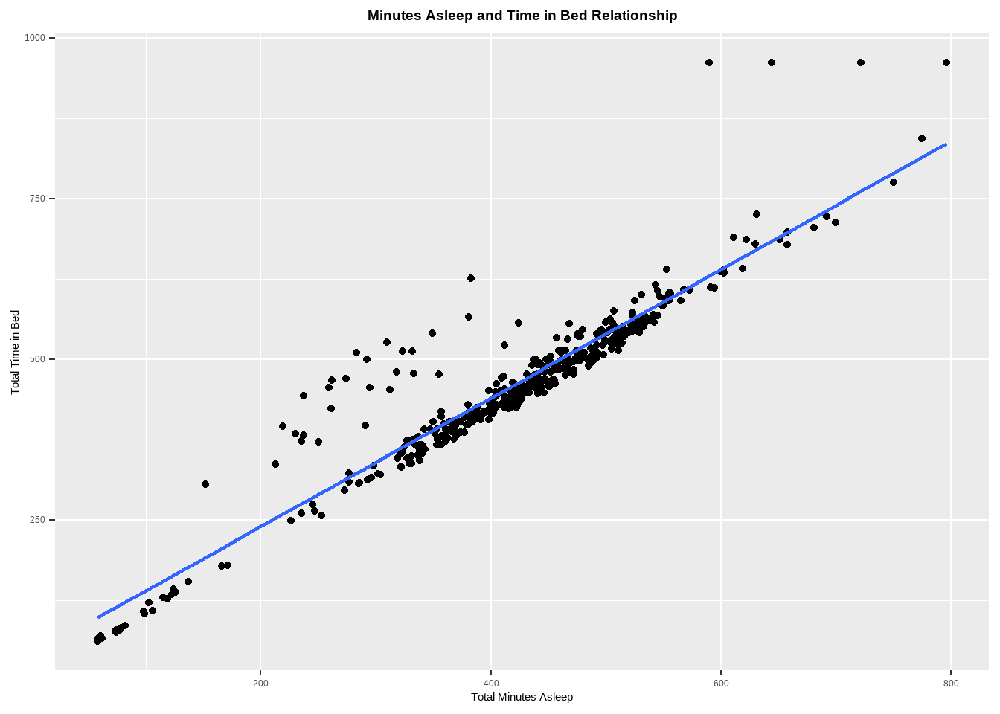 [Figure 6]
While the relationship between time in bed and time asleep is nearly linear, some outliers are observed in subjects who require a longer time to fall asleep.
Create a column to show week number
##
## 15 16 17 18 19
## 196 224 221 201 98Grouping the data by week
aggregateByWk <- dplyr::summarise(aggregateByWk,
AverageSteps = base::mean(TotalSteps, na.rm = TRUE),
AvgVeryActiveMin = base::mean(VeryActiveMinutes, na.rm = TRUE),
AvgModerateActMin = base::mean(FairlyActiveMinutes, na.rm = TRUE),
AvgLightlyActMin = base::mean(LightlyActiveMinutes, na.rm = TRUE),
AvgSedentaryMin = base::mean(SedentaryMinutes, na.rm = TRUE),
SumVeryActiveMin = base::sum(VeryActiveMinutes, na.rm = TRUE),
SumModerateActiveMin = base::sum(FairlyActiveMinutes, na.rm = TRUE),
SumLightlyActiveMin = base::sum(LightlyActiveMinutes, na.rm = TRUE),
AvgModerateActDis = base::mean(ModeratelyActiveDistance, na.rm = TRUE),
AvgVeryActiveDis = base::mean(VeryActiveDistance, na.rm = TRUE),
AvgActiveHours = base::mean(ActiveHours, na.rm = TRUE),
AvgSedentaryHours = base::mean(SedentaryHours, na.rm = TRUE),
AvgCalories = base::mean(Calories, na.rm = TRUE))Create a categorical variable for healthy habits according to WHO guidelines
aggregateByWk <- aggregateByWk %>%
mutate(Healthy = case_when(SumModerateActiveMin >= 150 ~ 'Y',
SumVeryActiveMin >= 75 ~ 'Y',
TRUE ~ 'N'))Plot
ggplot(aggregateByWk, aes(Healthy, AverageSteps)) +
geom_boxplot(aes(fill = stage(Healthy, after_scale = alpha(fill, 0.4)))) +
ggtitle("Mean number of steps by Healthy and Unhealthy Activity") +
theme(plot.title = element_text(color="black", size=14, face="bold",hjust=0.5))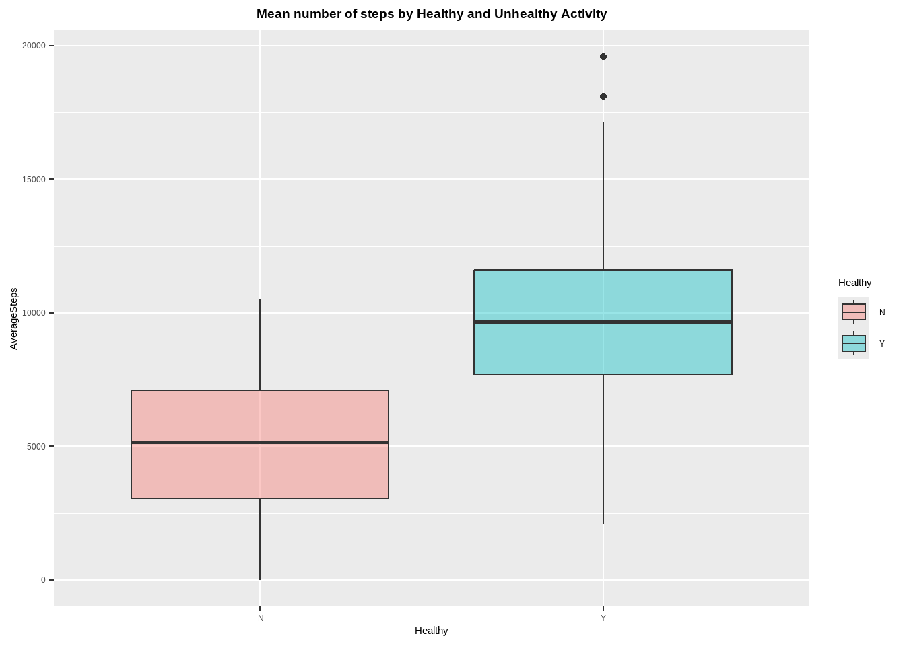 [Figure 7]
The data demonstrate that participants who maintain a “healthy” level of physical activity typically walk approximately 10,000 steps, while those in the “unhealthy” category typically walk around 5,000 steps on average.
ver1 <- ggplot(data = aggregateByWk, mapping = aes(x = AvgVeryActiveMin, y = AvgVeryActiveDis, colour = Healthy)) +
geom_point(size = 2, alpha = 0.5) +
xlab('Mean Very Active Minutes') +
ylab('Mean Very Active Distance')
mod1 <- ggplot(data = aggregateByWk, mapping = aes(x = AvgModerateActMin, y = AvgModerateActDis, colour = Healthy)) +
ylim(0,11) + xlim(0,120) +
geom_point(size = 2, alpha = 0.5) +
xlab('Mean Moderate Active Minutes') +
ylab('Mean Moderate Active Distance')
g0 <- plot_grid(ver1, mod1, labels = "AUTO")
title0 <- ggdraw() + draw_label("Very Active and Moderate Activity", fontface='bold')
plot_grid(title0, g0, ncol=1, rel_heights=c(0.1, 1))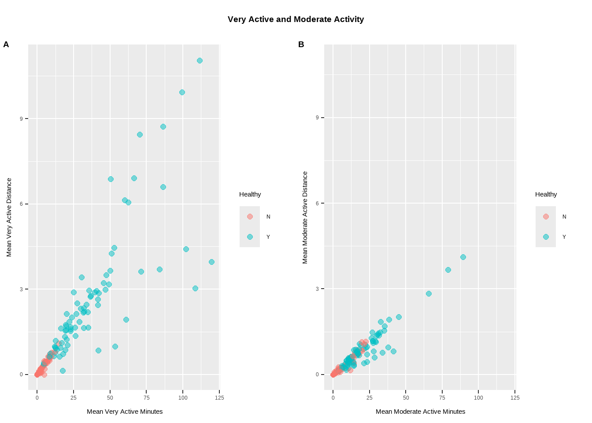 [Figure 8]
Participants engaging in moderate physical activity allocate a reduced amount of time and cover shorter distances in comparison to individuals categorized as “very active.”
Is the intensity of physical activity evenly distributed or is it concentrated in some participants?
data_longwk <- gather(aggregateByWk, variable, value, AvgVeryActiveMin:AvgModerateActMin)
intbyid <- data_longwk %>%
group_by(Id,variable) %>%
summarise(mean_value = mean(value))ggplot(data = intbyid) +
geom_bar(mapping = aes(fill = variable, x = Id, y = mean_value), stat = "identity", position = "dodge") +
ggtitle("Activity intensity per subject") +
theme(plot.title = element_text(color="black", size=14, face="bold",hjust=0.5))+
coord_flip( )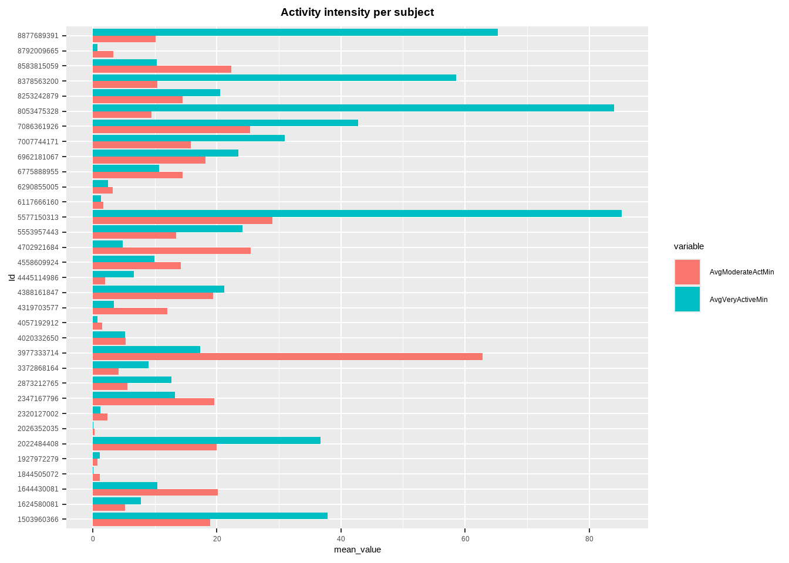 [Figure 9]
It is evident that the intensity of physical activity is disproportionate among the participants, with some displaying notably higher levels of exertion compared to the overall group.
Test whether individuals who engage in more physical activity experience better sleep quality.
join sleep with the intensities data
Total active minutes, can be the sum of VeryActiveMinutes+FairlyActiveMinutes+LightlyActiveMinutes.
Create new column for active minutes
new_sleep <- new_sleep %>%
rowwise() %>%
mutate(TotalActiveMin = sum(VeryActiveMinutes,FairlyActiveMinutes,LightlyActiveMinutes, na.rm = T))#plot(new_sleep$TotalActiveMin, new_sleep$TotalMinutesAsleep)
p1 <- ggplot(data=new_sleep,aes(x=TotalActiveMin, y=TotalMinutesAsleep)) +
geom_point(aes())+
geom_smooth(mapping = aes(x = TotalActiveMin, y = TotalMinutesAsleep)) +
xlab("Total Active Minutes") +
ylab("Total Minutes Asleep")
p2 <- ggplot(data=new_sleep,aes(x=SedentaryMinutes, y=TotalMinutesAsleep)) +
geom_point(aes())+
geom_smooth(mapping = aes(x = SedentaryMinutes, y = TotalMinutesAsleep)) +
xlab("Total Sedentary Minutes") +
ylab("Total Minutes Asleep")
g <- plot_grid(p1, p2, labels = "AUTO")
title <- ggdraw() + draw_label("Comparison of Active and Sedentary time with Sleep time", fontface='bold')
plot_grid(title, g, ncol=1, rel_heights=c(0.1, 1))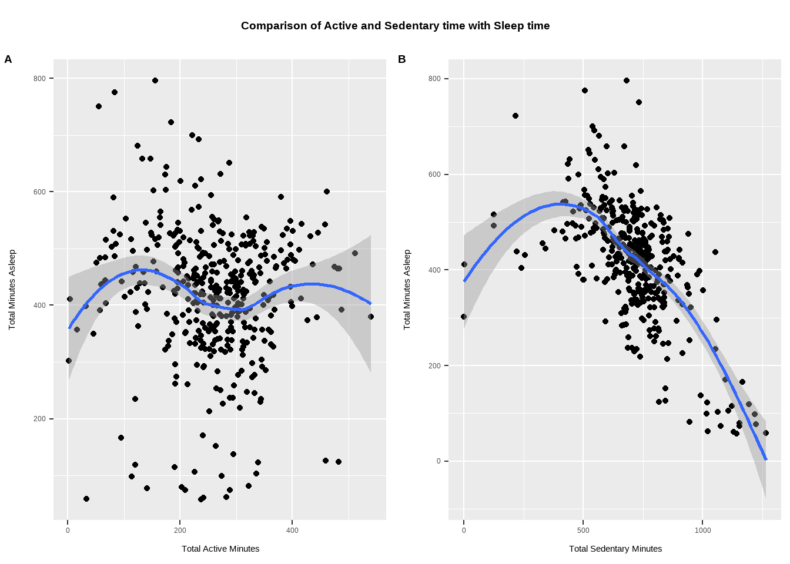 [Figure 10]
While the data does not appear to support a direct correlation between physical activity time and sleep time among participants, a negative relationship is observed between sedentary time and sleep time.
Do individuals with higher body weight tend to be less active?
Data type conversion
Join with activity data
new_weight <- weight %>%
select(Id,ActivityDay,WeightPounds,BMI) %>%
left_join(join_data, by=c('Id','ActivityDay'='ActivityDate'))Visualization of body weight and activity relationship
ggplot(data=new_weight,aes(x=WeightPounds, y=ActiveHours)) +
geom_point(aes())+
geom_smooth(mapping = aes(x = WeightPounds, y = ActiveHours)) +
xlab("Weight in Pounds") +
ylab("Active hours") +
ggtitle("Body weight and activity by Subject") +
theme(plot.title = element_text(color="black", size=14, face="bold",hjust=0.5))+
facet_wrap('Id')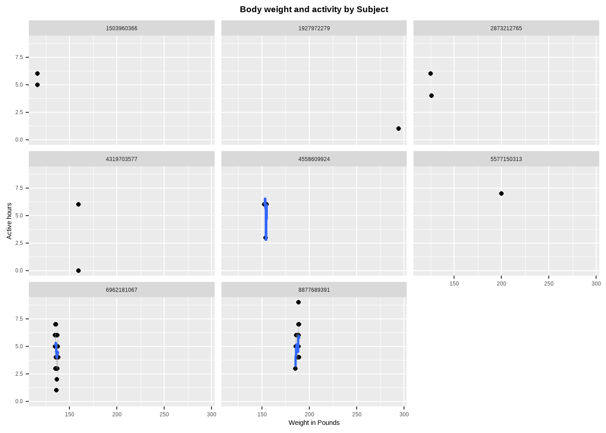 [Figure 11]
Given the limited scope of the dataset, which contains information on only eight participants, and the observation that the majority of the measurements are derived from just two of them, as illustrated in the graph, it is not feasible to draw any substantial inferences from this limited dataset.
Due to the limited nature of the heart rate dataset, I have consolidated the data from recordings made in March and April.
Count idividuals
## [1] 15## 'data.frame': 3614915 obs. of 3 variables:
## $ Id : num 2.02e+09 2.02e+09 2.02e+09 2.02e+09 2.02e+09 ...
## $ Time : chr "4/1/2016 7:54:00 AM" "4/1/2016 7:54:05 AM" "4/1/2016 7:54:10 AM" "4/1/2016 7:54:15 AM" ...
## $ Value: int 93 91 96 98 100 101 104 105 102 106 ...Only 15 subjects of the total have data for hr per second
Separate date and time
Formatting Time
Calculate beats per minute
agghrsec <- hrsec %>%
arrange(date, time) %>%
group_by(Id, date, min = substr(hrsec$time, 1, 5)) %>%
summarize(BPM = mean(Value), MinBPM = min(Value), MaxBPM = max(Value)) %>%
ungroup() %>%
select(-min)Average daily heart rate
minmaxbyid <- agghrsec %>%
group_by(Id, date) %>%
summarise(DailyMinHR = mean(MinBPM, na.rm = TRUE),
DailyMaxHR = mean(MaxBPM, na.rm = TRUE))
minmaxbyid <- minmaxbyid[complete.cases(minmaxbyid),]Adding day of the week
Explore the heart rate variation per day
ggplot()+
geom_point(data = minmaxbyid, aes(x = DayofWeek, y = DailyMinHR, color = "blue"), shape = 21)+
geom_point(data = minmaxbyid, aes(x = DayofWeek, y = DailyMaxHR, color = "red"), shape = 21, show.legend = TRUE)+
scale_color_manual(values = c("blue","red"), labels = c("Min_HR","Max_HR"), name = "") +
xlab("Date") +
ylab("HR in beats per min") +
ggtitle("Daily Min and Max Heart Rate by Subject") +
theme(plot.title = element_text(color="black", size=14, face="bold",hjust=0.5))+
facet_wrap('Id')+
theme(axis.text.x = element_text(angle = 45))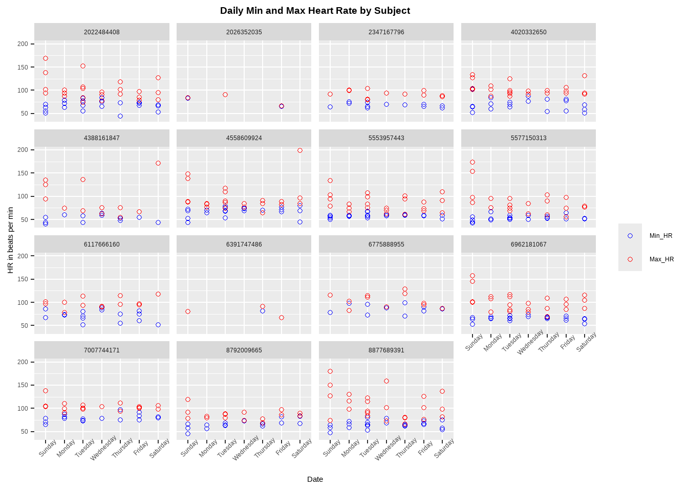
[Figure 12]
It appears that the occurrence of elevated heart rates is more prevalent on Sundays, potentially due to heightened physical activity among participants during the weekend. It is worth noting that one subject exhibited a heart rate that exceeded the established safety limits, while another subject displayed a heart rate that was significantly below the normal range.
Share Phase
As a continuation if the prior phase, a presentation of the visualizations showcasing the analysis of smart device usage trends will be made to the relevant stakeholders. This presentation will adhere to the principles of clarity and simplicity to ensure optimal comprehension.
Act Phase
Based on the available data, here are some high-level recommendations for the company’s marketing strategy:
The author would like to express their gratitude to the reader for taking the time to peruse this text.